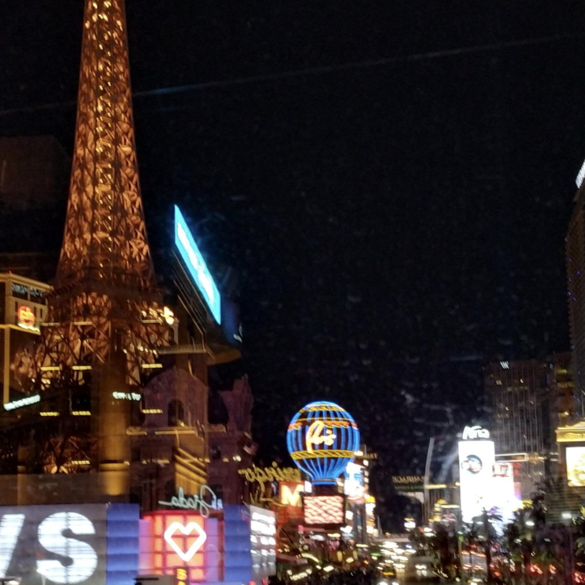
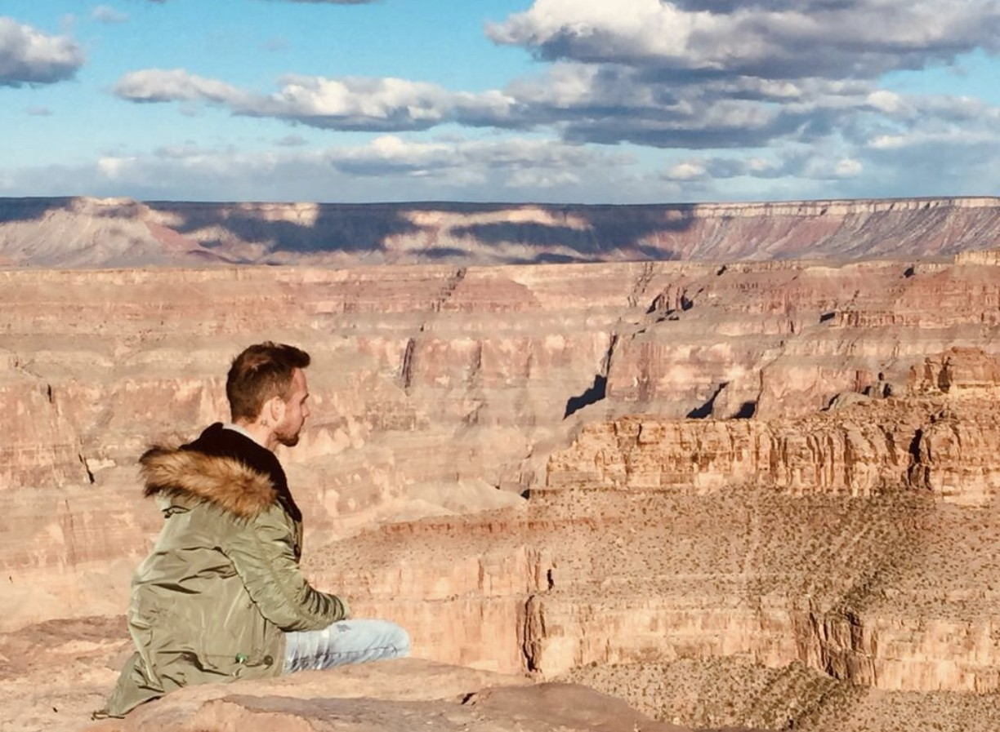
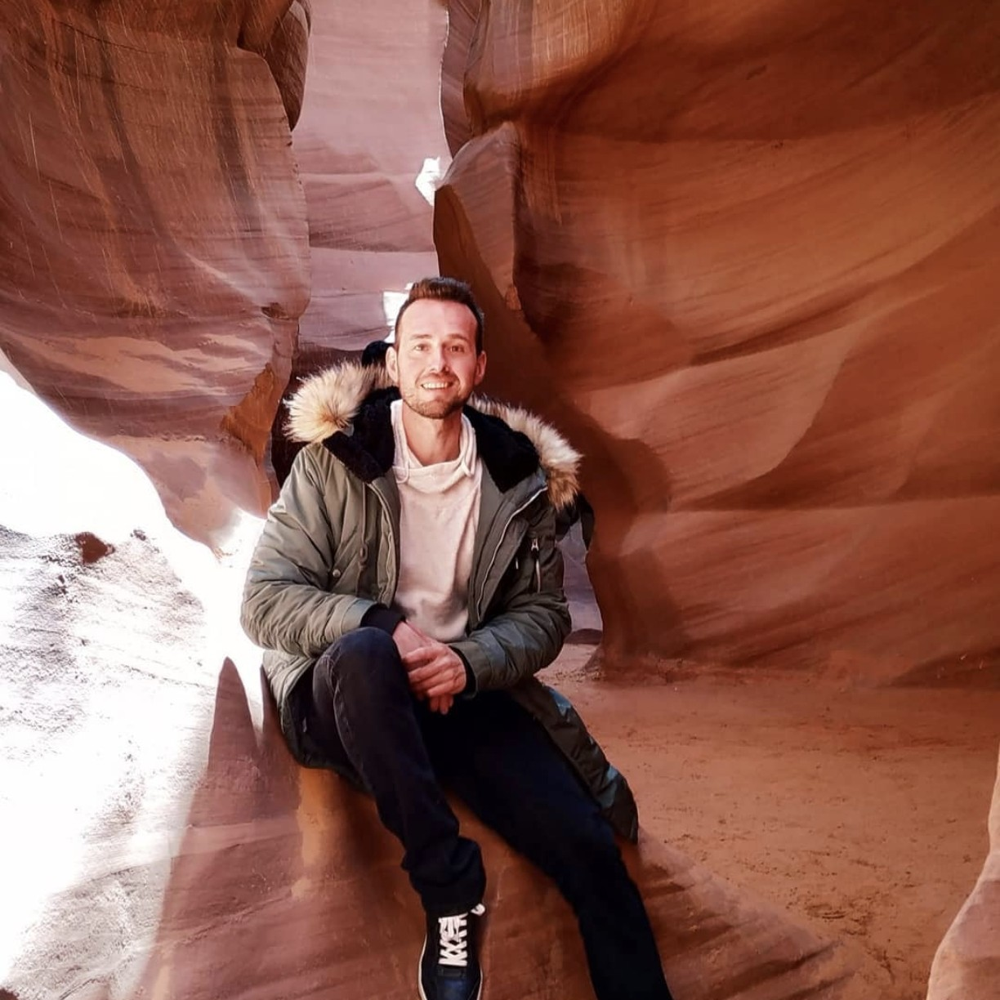
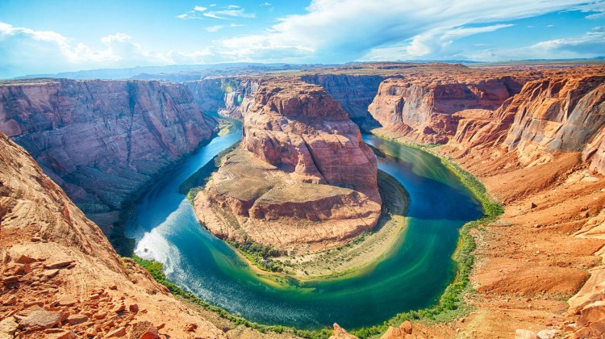
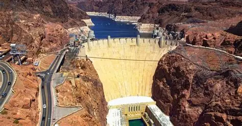
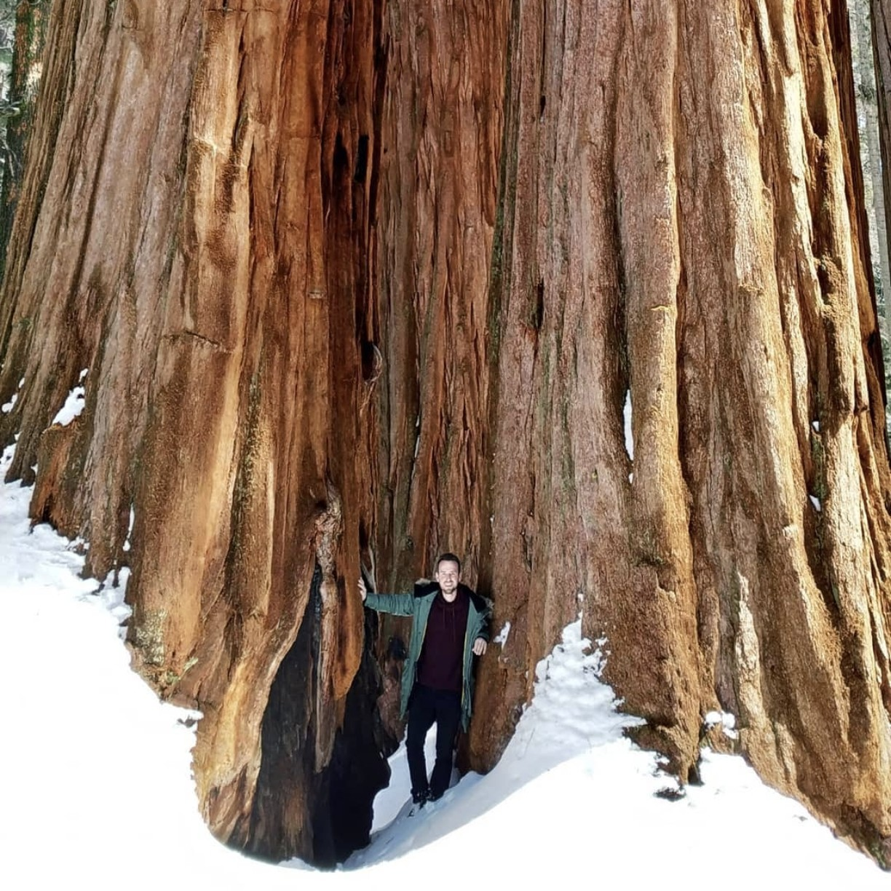
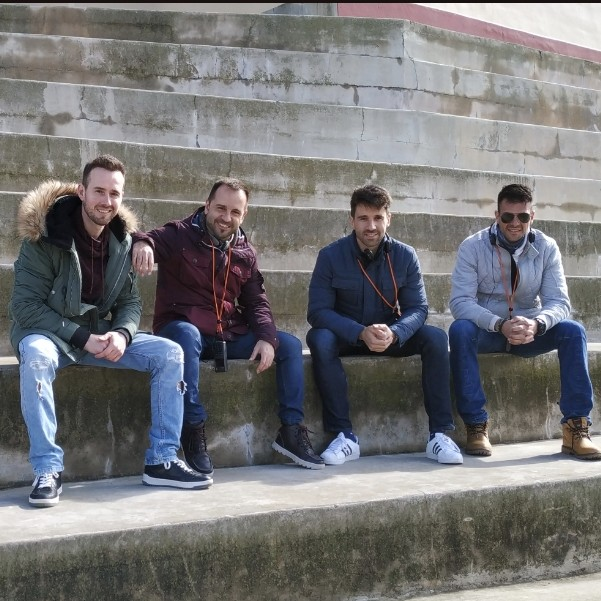
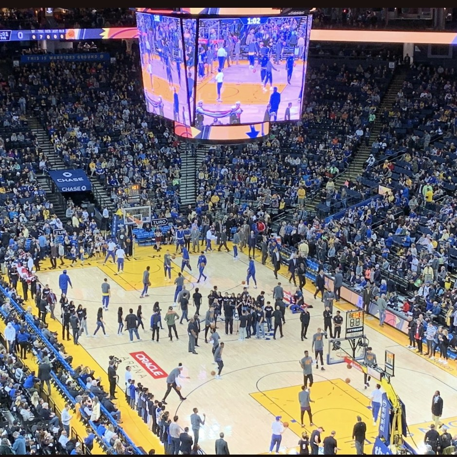
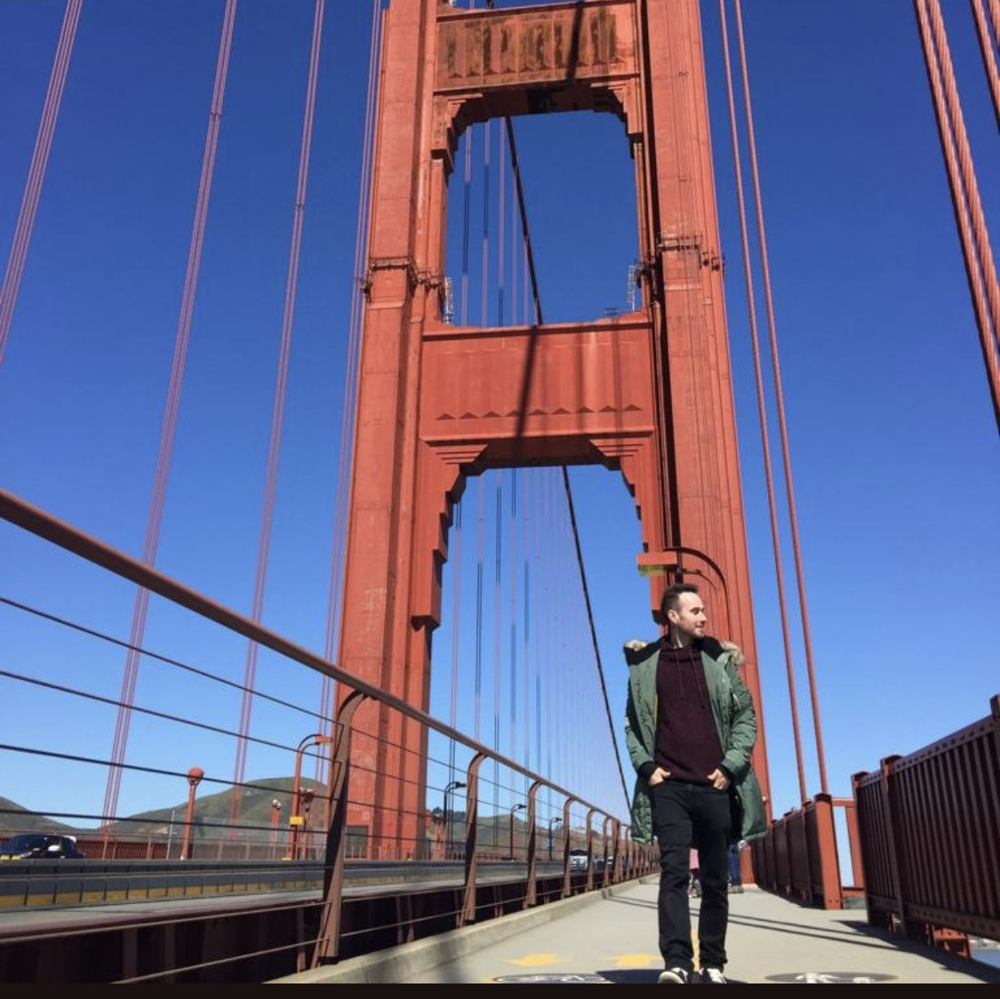
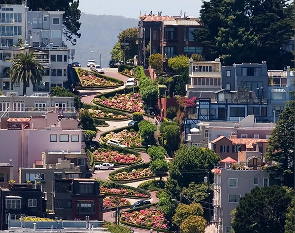

Gran Cañón, Antílope, Secuoyas, Las Vegas, San Francisco y más
La Costa Oeste de Estados Unidos es uno de los destinos más espectaculares del mundo para un roadtrip. Desde las luces de Las Vegas hasta la majestuosidad del Gran Cañón, pasando por los árboles gigantes de las Secuoyas y la vibrante ciudad de San Francisco.
Esta ruta de 12 días combina naturaleza salvaje, ciudades icónicas y paisajes de otro planeta. Es el viaje perfecto para los amantes de la aventura, la fotografía y los grandes espacios abiertos. Alquilar un coche es imprescindible para recorrer los parques nacionales y disfrutar de la libertad que ofrece la carretera americana.
---Mi recomendación es alojarse en Las Vegas los primeros días (aprovecha las ofertas de hoteles en el Strip), luego en Flagstaff o Page para el Gran Cañón y Antílope, y finalmente en San Francisco para terminar la ruta.
🚗 Coche en la Costa Oeste: Es imprescindible. Las distancias son enormes (ej: Las Vegas → Gran Cañón son 4,5h). Alquila un coche cómodo y con aire acondicionado. El seguro es muy recomendable.
🏠 Alternativas: Los moteles de carretera son una opción económica y auténtica. En los parques nacionales, las cabañas se reservan con meses de antelación.
🚫 Zonas a evitar en San Francisco: El Tenderloin (drogas y mendicidad) y el Bayview (inseguro).

La avenida más famosa del mundo, llena de hoteles temáticos, casinos, espectáculos y restaurantes. Pasear por el Strip de noche es una experiencia única, con las luces de neón, las fuentes del Bellagio y el volcán del Mirage.
No te pierdas el espectáculo de las fuentes del Bellagio (cada 30 minutos), el volcán del Mirage (cada hora) y la réplica de la Torre Eiffel en el Paris. También puedes subir a la High Roller (la noria más grande del mundo) o visitar el Fremont Street Experience en el centro histórico.

Una de las maravillas naturales del mundo. El South Rim es la zona más visitada y la que ofrece las mejores vistas. El cañón tiene 446 km de largo, hasta 29 km de ancho y 1.800 metros de profundidad.
Puedes recorrer los miradores en coche (Hermit Road, Desert View Drive) o caminar por el borde del cañón (Rim Trail). Si te atreves, puedes hacer senderismo hasta el fondo del cañón (Bright Angel Trail), pero requiere preparación y mucha agua.

El cañón de ranuras más famoso del mundo. Las paredes de arenisca roja se iluminan con los rayos de sol que filtran desde arriba, creando un espectáculo de colores y sombras. Es uno de los lugares más fotogénicos del planeta.
Se divide en Upper Antelope (más famoso, con los rayos de luz) y Lower Antelope (más estrecho y menos concurrido). Solo se puede visitar con tour guiado.

El famoso meandro del río Colorado en forma de herradura. La vista desde el acantilado es espectacular, con el río serpenteando 300 metros por debajo.
El acceso es fácil: un sendero de 1,5 km (30 minutos) desde el aparcamiento. El mejor momento para las fotos es al atardecer, cuando el sol ilumina las paredes rojas del cañón.

Una de las obras de ingeniería más impresionantes del siglo XX. La presa de 221 metros de altura crea el lago Mead, el embalse más grande de EE.UU. Está a solo 45 minutos de Las Vegas.
Se puede visitar la central eléctrica y el mirador. La carretera pasa por encima de la presa (la famosa escena de la película "San Andreas"). Las vistas del lago y el cañón son impresionantes.

El hogar de los árboles más grandes del mundo. La secuoya gigante "General Sherman" tiene 83 metros de altura y 2.000 años de antigüedad. Es el ser vivo más grande del planeta.
El parque tiene senderos para caminar entre los árboles gigantes, como el Congress Trail (3 km) o el Big Trees Trail (1 km). El Moro Rock es un mirador de granito con vistas espectaculares.

La famosa prisión de máxima seguridad ubicada en una isla en medio de la bahía de San Francisco. Albergó a criminales famosos como Al Capone. Estuvo activa de 1934 a 1963.
La visita incluye el ferry desde Fisherman's Wharf y un audio tour narrado por antiguos presos y guardias. Es una experiencia fascinante y sobrecogedora. Las vistas de la bahía y el puente Golden Gate son espectaculares.

Ver un partido de la NBA en el Chase Center es una experiencia inolvidable. Los Golden State Warriors son uno de los equipos más famosos de la liga, con estrellas como Stephen Curry.
El ambiente en el pabellón es electrizante, con animadores, música en directo y la afición más entregada de la NBA. Incluso si no te gusta el baloncesto, merece la pena por el espectáculo.

La ciudad más icónica de la Costa Oeste. El puente Golden Gate es el símbolo de la ciudad. Puedes cruzarlo a pie o en bici, o verlo desde los miradores de Battery Spencer o Baker Beach.
Otros lugares imprescindibles: Fisherman's Wharf (con sus leones marinos), la calle más torcida del mundo (Lombard Street), el barrio chino, Alcatraz y los famosos tranvías (cable cars).

Conocida como "la calle más torcida del mundo", este tramo de Lombard Street entre las calles Hyde y Leavenworth es uno de los lugares más fotografiados de San Francisco. Tiene ocho curvas cerradas en zigzag que permiten a los vehículos descender una pendiente del 27% (casi 1,5 metros de desnivel por cada 5 metros de calle).
Fue diseñada en 1922 para reducir la peligrosidad de la pendiente natural y hoy es una atracción turística imprescindible. Puedes recorrerla en coche (a 8 km/h, con paciencia) o caminar por las escaleras laterales.
Planifica bien las distancias. Las Vegas → Gran Cañón (4,5h), Gran Cañón → Page (2h), Page → Las Vegas (4,5h) o → Secuoyas (8h). Recomiendo hacer noche en Page para ver Antílope y Horseshoe Bend.
Compra el pase America the Beautiful Pass (80$) si visitas 3 o más parques nacionales. Te ahorrará dinero.
{kind=link}
{kind=link}
{kind=link}
{kind=link}
{kind=link}
{kind=link}
{kind=link}
{kind=link}
{kind=link}
{kind=link}
{kind=link}
{kind=link}
{kind=link}
{kind=link}
{kind=link}
{kind=link}
{kind=link}
{kind=link}
{kind=link}
{kind=link}